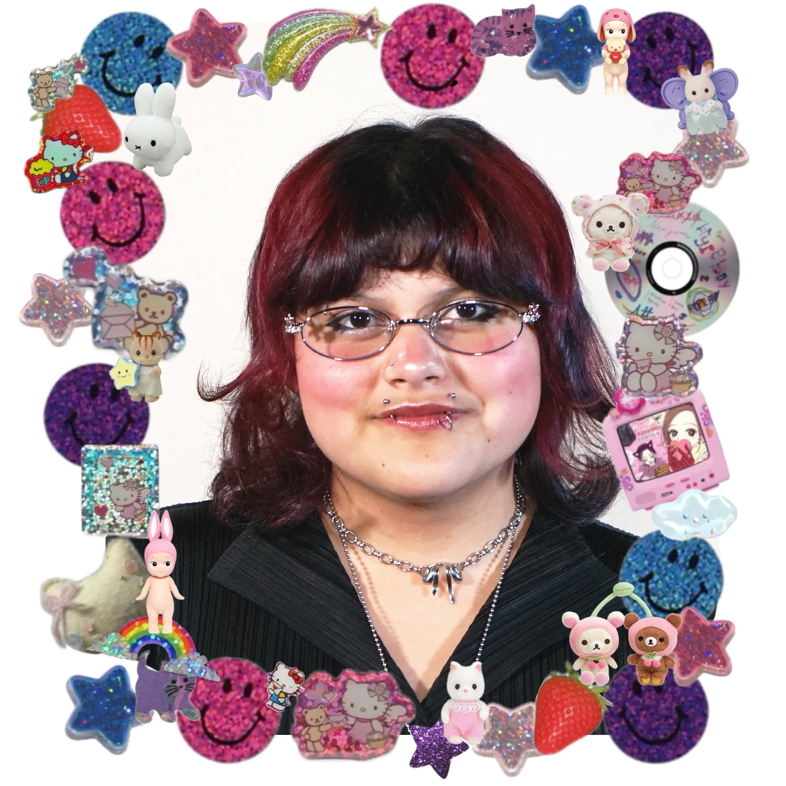

Merlin Susana Enriquez
creative tech + hci + design @ carnegie mellon university
I am a creative technologist, fabricator and researcher working at the intersection of art & technology. My practice centers on making playful tech, holding people's data with care, and creating accessible spaces for communities to learn art/tech :)
Through these intersections, I am able to connect everything into one narrative. I am playful, whimsical and bring necessary topics into discussion. There has to be a balance of enjoying life and combating the system that restricts that enjoyment. In a time where freedom of speech is restricted, I hope my work can be both the healer and attacker in our current political system.
Outside of my 'creative tech' + research work, I am a lifestyle lolita who is also a fashion designer/toy-maker (making life-size plushies)! I help run a wearable art show called Haute Glue, where I teach fashion design, soft sculpture skills and sewing to people :) In hopes for them to utilize those skills and make a funky, weird 'wearable art' or fashion line :D
I am also building a third space, called [untitled]--- for folks who have a hard time categorizing what they exactly 'do'. I love hosting fun, silly events and building safe systems for my community ❤
> always open to chat ❤